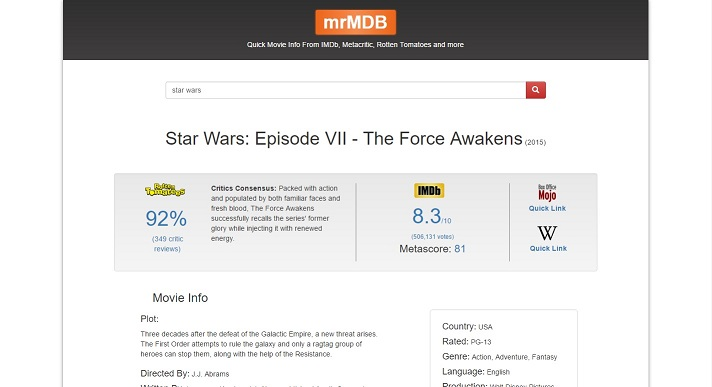
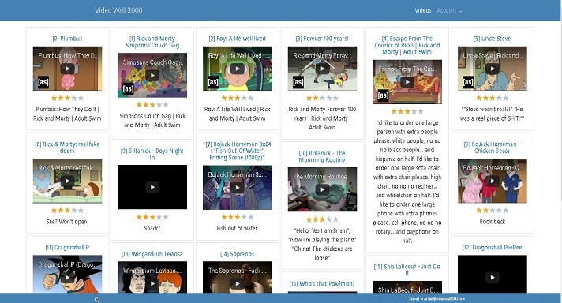

Paulo Esteves
Front-End Web Developer
I'm a marketing graduate, who decided to do a complete 180 and switch to programming. After a period of studying full-time online (mostly using udacity.com), I ended up landing a job that allowed me to gain experience while proceeding with my studies. I already enjoyed experimenting with code as a kid, and I've always found the main idea behind programming - the possibility of building almost anything from scratch with just a computer - really fascinating. Please, have a look at the following projects. They also include some context and their respective Github repositories.
Featured Work
mrMDB
Video Wall 3000
Calorie Tracker
Arcade Game (frogger)
Downtown Map

Feedreader Testing